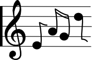

While the three other instruments hold a cluster of high notes, the
cellist’s silent gestures interact with them, provoking a windy sonority
that becomes noisier as the cellist’s gestures become more energetic.
A short interlude employing conventional playing techniques (bows are
applied on the strings in the usual way, though sounds are still high
and dissonant).
A rich mixture of tremolos and glissandos at various speeds in the highest
register. Each part of the quartet descends progressively into the medium
register: a sound colour with greater solidity emerges.
The first violin plays high notes once again, this time “flautando” i.e. with a flute-like tone (by lightly
bowing across the end of the fingerboard). The other instruments
follow suit until a disparate mix of “flautando” and
“sul ponticello” is established and enriched by
granular synthesis from the electronics.
Louder notes and groups of notes irregularly irrupt, often using a
“gettato” bow stroke: the player lets the bow freely
rebound against the string-once or several times in a row like a ping
pong ball.

From this point onward all the preceding techniques are increasingly
varied and combined. Identifying them becomes more challenging. Good
luck!